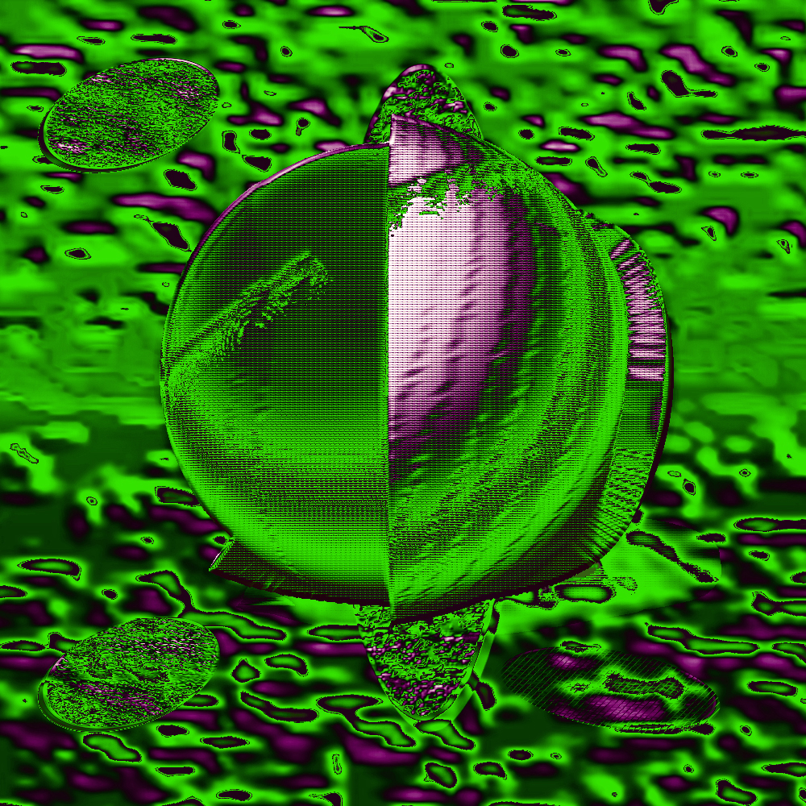
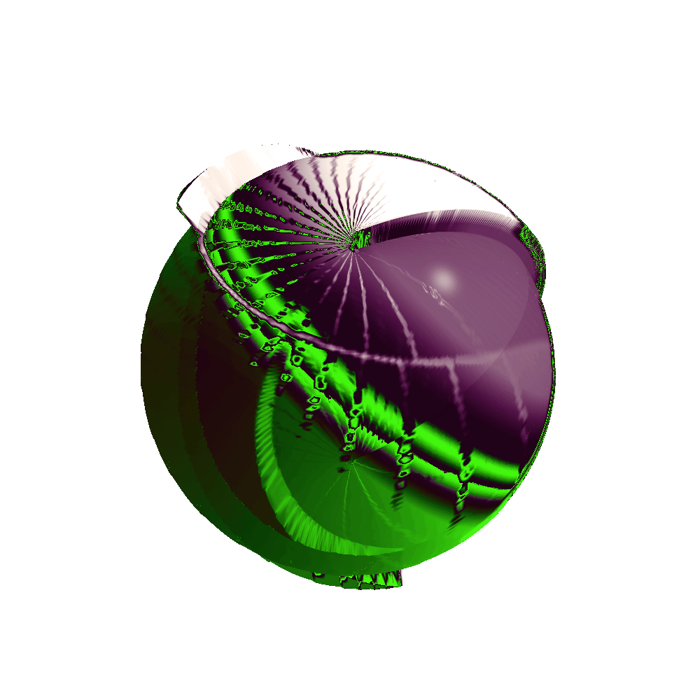
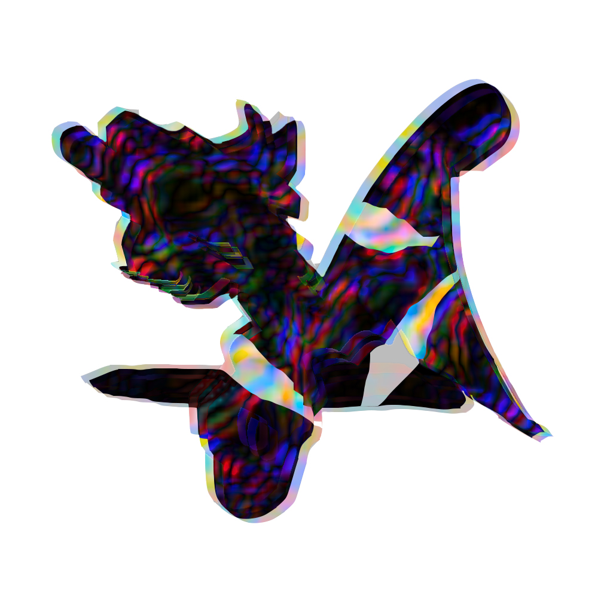

The River Of Neïd EP, September 17, 2020
Situated from miles and miles underground, the river of Neïd flows around the tower of the rabbit master to throw itself into the black sea of the North West of Neïd, a city build on ancient ruins. The ambient temperature of the river diffuses a petroleum jelly textile on its surface that enchant everyone who touches it. The river of Neïd has organisms living in it, it was nourished by the melody of sulfur particles caused by the hydraulic action of the liquid on the rocks.
Produced by Sukkube Mastered by Stephan Lefrançois Artcover by Julia Castel

(Re Edit) Album
Redition of old tracks, 2020
Manifeste Triangulaire EP
In Manifeste Triangulaire the sound elements combine in the space of Euclidean geometry to compose a cold and industrial atmosphere. Textures shift and repeat themselves, measurements are cut out by the abrasive intervention of punctual events with very strict coordinates. The modules fluctuate and fail to cause asphyxiation of their continuity in order to allow the rotor to nestle into its stator.

Human Machine EP
The Human Machine is one of the demons that live in the underworld with the Crisis that is like their king. He looks human. They like to spread evil on earth by making their victims consume.

Analog Room

About Abu

6 Muslim Games 9
Acolora Show #4 - sojbdor, sync_system, Mix for the RadioUdon, 1:58 min, 2019
This is the fourth episode of our incredible series of 9 shows that will be hosted by each member of Acolora ! In the synchronized swimming program, GRS or set the record straight. It will depend on how late or staggered you are for this show; sync system that will get you back on track for sure. You can also find and listen to previous shows on the Udon mixcloud. Mix here




